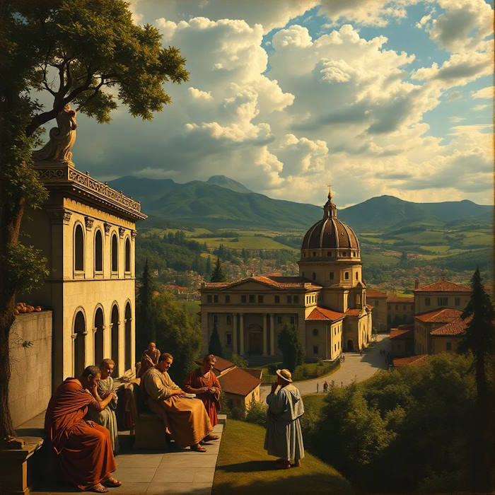

Какие произведения отражают идеалы Возрождения?
Идеалы Возрождения, возникшие в Европе в XIV–XVI веках, знаменуют переход от средневекового мировоззрения к новому пониманию человека и мира. Этот период характеризуется возрождением интереса к античной культуре, гуманизмом, акцентом на индивидуальность, красоту и гармонию, а также верой в потенциал человеческого разума. Эти принципы нашли своё яркое выражение в произведениях искусства, литературы, архитектуры и музыки, которые стали отражением эпохи, полных стремления к знаниям, творчеству и свободе самовыражения.
Искусство
В изобразительном искусстве идеалы Возрождения воплотились в стремлении к реализму, перспективе и анатомической точности. Леонардо да Винчи в своём шедевре «Мона Лиза» (ок. 1503–1506) передал глубину человеческой души через тонкую игру света и тени, а также загадочную улыбку, символизирующую сложность человеческой природы. Микеланджело Буонарроти с его росписью Сикстинской капеллы, особенно сценой «Создание Адама» (1508–1512), подчеркнул величие человека, изображая его в динамике и гармонии с божественным. Рафаэль в «Афинской школе» (1509–1511) прославил мудрость античных философов, создав композицию, полную интеллектуальной и эстетической гармонии.
Литература
Литература Возрождения отразила гуманистические идеалы через образы сильных личностей и исследование человеческих страстей. Данте Алигьери в «Божественной комедии» (1321) создал эпическое путешествие души, сочетая христианскую теологию с античной поэзией, что стало символом духовного поиска. Франсуа Рабле в «Гаргантюа и Пантагрюэль» (1532–1552) сатирически изобразил человеческие пороки, прославляя радость жизни и знания. Шекспир в своих пьесах, таких как «Гамлет» (ок. 1600), исследовал внутренние конфликты человека, подчёркивая его свободу выбора и моральный рост.
Архитектура
Архитектура Возрождения стремилась к симметрии, пропорциям и красоте, вдохновлённой античными образцами. Филиппо Брунеллески с куполом флорентийского собора Санта-Мария-дель-Фьоре (1420–1436) продемонстрировал инженерный гений и эстетическое совершенство. Андреа Палладио в своих виллах, таких как Вилла Ротонда (1566–1571), воплотил идеалы гармонии и равновесия, став образцом для будущих поколений. Собор Святого Петра в Риме (1506–1626), спроектированный Браманте, Микеланджело и другими, стал вершиной архитектурного синтеза античности и христианства.